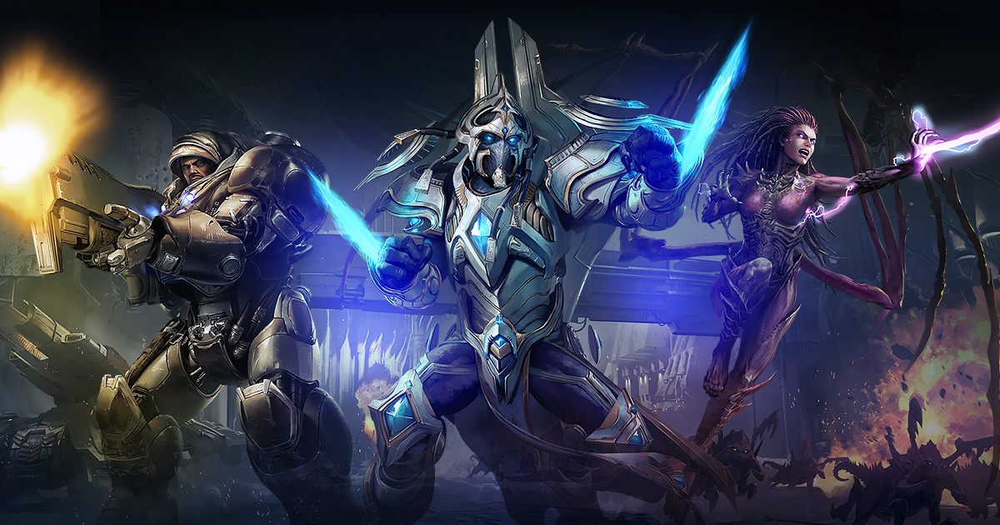
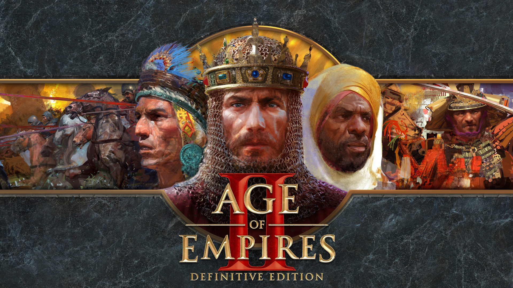
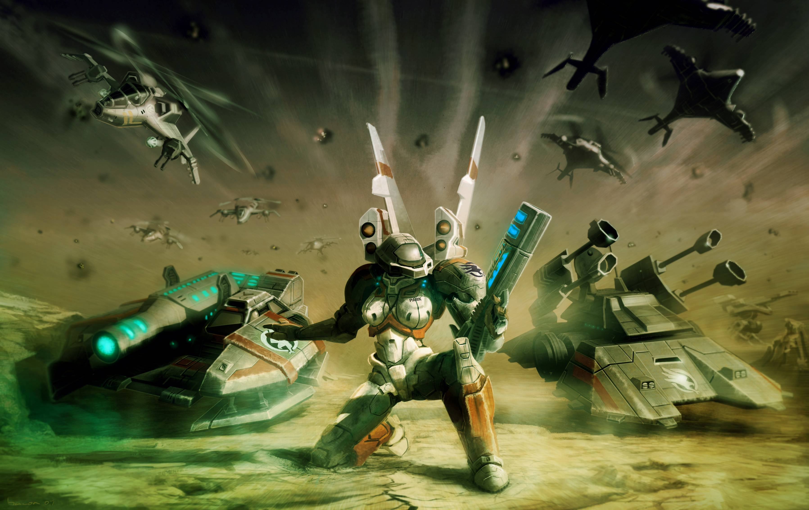

RTS (Real-Time Strategy)
Popular RTS Esports Games

StarCraft II
A sci-fi RTS featuring three unique races (Terran, Zerg, Protoss) battling for galactic dominance. Known for its deep strategic gameplay and high skill ceiling
Game Mechanics:
Players gather resources, build bases, and command armies in real-time. Each race offers distinct units and strategies, emphasizing multitasking and rapid decision-making.
Game Tournament:
Major events include the Global StarCraft II League (GSL), World Championship Series (WCS), and Intel Extreme Masters (IEM)

Age of Empires II
A historical RTS where players guide civilizations from the Dark Ages to the Imperial Age, focusing on economy, technology, and military conquest.
Game Mechanics:
Players collect resources, build towns, advance through ages, and wage war using unique units and technologies for each civilization.
Game Tournament:
Major events include the Red Bull Wololo, Hidden Cup, and various community-driven events, showcasing top players and innovative strategies.

Command & Conquer
A classic RTS franchise set in alternate history and sci-fi universes, known for its fast-paced gameplay, base building, and memorable full-motion video cutscenes.
Game Mechanics:
Players harvest resources, construct bases, and deploy units in real-time battles. The series is famous for asymmetric factions and accessible, action-oriented gameplay.
Game Tournaments:
While not as prominent today, Command & Conquer had a significant competitive scene in the late 1990s and early 2000s, with community tournaments still ongoing.